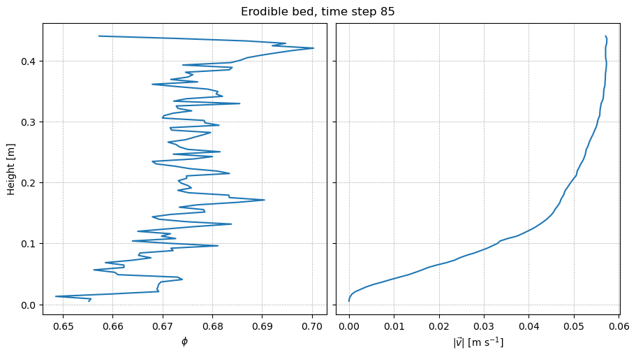

3D coarse graining of an erodible bed
In this example, we coarse grain a 3D MFiX simulation of an erodible bed of spherical particles (no fluid) with periodic boundaries, and plot vertical profiles of the coarse-grained fields over time.
The files required for this example can be found in the repository:
The DEM simulation data files in
examples/data_examples/erodible_bed/DEM_data/(one time step,t = 85)Pysammos output for 145 time steps in
examples/data_examples/erodible_bed/Pysammos_data_paper/, used for the time series plotsThe configuration file
config.iniinexamples/erodible_bed/
The coarse graining can also be run from the compute_CG.ipynb notebook in examples/erodible_bed/.
Import packages
[1]:
from pysammos.utils.config_loader import load_config
from pysammos.coarse_graining import CoarseGraining
from pysammos.data_write.h5.writer import H5XarrayManager
from pysammos.post_averaging.profiles import VerticalIntegrator
Hello from pysammos
Loading macroscopic_fields package...
Loading data_read package...
Loading particle_phase package...
Loading spatial_weights package...
Loading neighbour_search package...
Loading grid_generation package...
Loading data_handle package...
Loading data_write package...
Loading post_averaging package...
[2]:
import numpy as np
import matplotlib as mpl
import matplotlib.pyplot as plt
[1]:
from pathlib import Path
import os
# The paths inside config.ini (DEM data, output folder) are relative to the example folder,
# so we work from examples/erodible_bed/ and read its config.ini.
if "EXAMPLE_DIR" not in globals(): # resolve once, so the cell can be re-run
EXAMPLE_DIR = (Path.cwd() / "../../examples/erodible_bed").resolve()
os.chdir(EXAMPLE_DIR)
CONFIG_FILE = EXAMPLE_DIR / "config.ini"
print("Working directory:", Path.cwd())
Working directory: /exports/csce/datastore/geos/users/s1857688/Coarse_Graining/pysammos/examples/erodible_bed
The configuration file
For a description of every section, see the bedload transport example. The file used here is:
[2]:
print(CONFIG_FILE.read_text())
[paths]
particles_path = ../data_examples/erodible_bed/DEM_data/DES_
contacts_path = ../data_examples/erodible_bed/DEM_data/FC_
output_path = ./PysammosCG/
[timesteps]
t0 = 85
tf = 85
dt = 1
t_pad = 4
[smoothing_function]
type = Lucy
[flags]
partialignore = True
[key_mapping]
Global_ID = Particle_ID
Particle_Velocity = Velocity
Particle_Diameter = Diameter
Particle_Density = Density
Particle_Volume = Volume
Particle_Mass = Mass
Particle_Radius = None
Coordination_Number = None
Particle_i_ID = Particle_ID_1
Particle_j_ID = Particle_ID_2
Force_ij = FORCE_CHAIN_FN
Contact_ij = None
[DEM_software]
name = mfix
[grid_info]
grid_dimension = 3
grid_axes = xyz
automatic_grid = False
x_min = 0.005
x_max = 0.10
y_min = 0.005
y_max = 0.44
z_min = 0.005
z_max = 0.05
x_transect = None
y_transect = None
z_transect = None
x_axis_periodic = True
y_axis_periodic = False
z_axis_periodic = True
[simulation_box]
# limits of the DEM simulation box; required on every periodic axis in [grid_info]
x_range = 0, 0.15
y_range = None
z_range = 0, 0.07
[fields_to_export]
volume_fraction = True
density_particle = False
density_mixture = True
momentum_density = False
velocity = True
velocity_gradient = False
kinetic_tensor = False
contact_tensor = False
total_stress_tensor = True
pressure = True
granular_temperature = True
granular_temperature_slices = True
fabric_tensor = False
inertial_number = True
coordination_number = False
d43 = False
d32 = False
frictional_coefficient = True
shear_rate_tensor = False
[output_options]
vkthdf_output = True
h5_output = True
time_average = False
Compared with the 2D bedload transport example:
grid_dimension = 3andgrid_axes = xyz: the fields are computed on a 3D grid, with the rangesx_min…z_max(automatic_grid = False). The vertical axis isy.x_axis_periodic = Trueandz_axis_periodic = True: the domain is periodic in both horizontal directions.Force_ij = FORCE_CHAIN_FNandContact_ij = None: the contact points are not in the MFiX output, so Pysammos calculates them from the particle positions and diameters.
Initialise the CoarseGraining class
load_config returns the arguments of CoarseGraining as a dictionary, so they can be passed directly with **. You can also give each argument explicitly, as shown in the bedload transport example.
[5]:
cfg = load_config(CONFIG_FILE)
CG = CoarseGraining(**cfg)
Output path created: ./PysammosCG/
Run the coarse graining
The whole workflow can be run with a single command:
CG.run()
Here we run it step by step instead, to show what each step does.
1. Load the size-relevant particle data for the first time step
[6]:
Bounds_t0, Diameter_t0, Density_t0, Mass_t0, GlobalID_t0 = CG.data_sampling()
Sampling data for the first time step to obtain particle properties and bounds ...
XML-based PolyData detected.
2. Calculate the particle size statistics
[7]:
CG.get_particle_size_statistics(Diameter_t0, Mass_t0)
print(">> Particle size statistics: ")
print(" d43: ", CG.d43)
print(" dmax: ", CG.dmax)
print(" d50: ", CG.d50)
print(" d32: ", CG.d32)
print(" drms: ", CG.drms)
>> Particle size statistics:
d43: 0.005285499695006148
dmax: 0.0055
d50: 0.0055
d32: 0.005273755565943092
drms: 0.005255948948344964
3. Get the phases
[8]:
CG.get_particle_phases(Diameter_t0, Density_t0, GlobalID_t0, 8)
print(">> Phases: ")
print(" Diameters: ", CG.phases[:,0])
print(" Densities: ", CG.phases[:,1])
Ignoring phases. Using mean density and d50 as phase.
>> Phases:
Diameters: [0.00527376]
Densities: [1050.]
4. Calculate the coarse-graining resolution
The argument is the reference diameter; a larger value gives a wider kernel (larger w and cutoff c).
[9]:
CG.set_resolution(CG.d43)
print(">> Coarse Graining resolution: ")
print(" c:", CG.c)
print(" w:", CG.w)
>> Coarse Graining resolution:
c: 0.007928249542509222
w: 0.003964124771254611
5. Generate the coarse-graining grid
[10]:
CG.generate_grid()
print(">> Grid: ")
print(" Grid Points: ", CG.GridPoints.shape, "First Point: ", CG.GridPoints[0])
print(" Nodes: ", CG.Nodes)
print(" Spacing: ", CG.Spacing)
Generating Grid with Customised Grid Ranges
Customised grid bounds: x = [0.005, 0.1], y = [0.005, 0.44], z = [0.005, 0.05], x_transect = None, y_transect = None, z_transect = None
>> Grid:
Grid Points: (36075, 3) First Point: [0.005 0.005 0.005]
Nodes: [ 25 111 13]
Spacing: [0.00395833 0.00395455 0.00375 ]
6. Calculate the coarse-grained fields
[11]:
CG.fields_in_time()
-------------------- Calculating Coarse Grained Fields --------------------
---> Time step 0: time 0085 ................................................
Loading data ...
Particle data loaded
Repeated pairs in contact data: 4566
Contact data loaded and mapped
Coordination number not required. Skipping its calculation.
... data loaded
Matching particles to grid points ...
... particles assigned to grid nodes
Computing weights ...
Using Lucy kernel with cutoff 0.007928249542509222 and search sampling factor 1000
... weights computed
Computing Coarse Graining fields...
volume fraction done
mixture density done
momentum density done
velocity done
velocity gradient done
kinetic tensor done
contact tensor done
d43 done
d32 done
particle density done
total stress done
pressure done
granular temp done
shear rate done
inertial number done
mu done
... fields computed
Writing results for timestep 85...
File successfully updated to ./PysammosCG/CG_Lucy_Monodisperse.h5
File successfully written to ./PysammosCG/CG_Lucy_Monodisperse_0085.vtkhdf
... results written
File successfully updated to ./PysammosCG/CG_GranularTemperature_slices.h5
File successfully written to ./PysammosCG/CG_GranularTemperature_slices.h5
>> time step 0 took 16.29565978050232 to run.
Plotting the results
The coarse-grained fields are saved in examples/erodible_bed/PysammosCG/.
1. Vertical profiles of the time step just computed
VerticalIntegrator averages the gridded fields over the horizontal directions (x and z), giving profiles along y.
[12]:
manager_run = H5XarrayManager("./PysammosCG/CG_Lucy_Monodisperse.h5")
erosion_run = manager_run.h5_to_xarray()
profiles_run = VerticalIntegrator(erosion_run, "y").integration()
Processing key: density_mixture
Processing key: frictional_coefficient_01_Pxy
Processing key: frictional_coefficient_01_Pxyz
Processing key: frictional_coefficient_01_Py
Processing key: frictional_coefficient_Dxy_Pxy
Processing key: frictional_coefficient_Dxy_Pxyz
Processing key: frictional_coefficient_Dxy_Py
Processing key: frictional_coefficient_Dxyz_Pxy
Processing key: frictional_coefficient_Dxyz_Pxyz
Processing key: frictional_coefficient_Dxyz_Py
Processing key: granular_temperature_x
Processing key: granular_temperature_xyz
Processing key: granular_temperature_y
Processing key: granular_temperature_z
Processing key: inertial_number_Sxy_Pxy_d32
Processing key: inertial_number_Sxy_Pxy_d43
Processing key: inertial_number_Sxy_Pxyz_d32
Processing key: inertial_number_Sxy_Pxyz_d43
Processing key: inertial_number_Sxy_Py_d32
Processing key: inertial_number_Sxy_Py_d43
Processing key: positions
Processing key: pressure_x
Processing key: pressure_xy
Processing key: pressure_xyz
Processing key: pressure_y
Processing key: pressure_z
Processing key: time
Processing key: total_stress_tensor_xy_dev
Processing key: total_stress_tensor_xy_dev_mag
Processing key: total_stress_tensor_xyz
Processing key: total_stress_tensor_xyz_dev
Processing key: total_stress_tensor_xyz_dev_mag
Processing key: total_stress_tensor_xyz_mag
Processing key: velocity
Processing key: volume_fraction
Starting integration along profile dimension: y
Completed integration along profile dimension: y
[13]:
fig, ax = plt.subplots(1, 2, figsize=(9, 5), sharey=True, constrained_layout=True)
phi = profiles_run["volume_fraction"].isel(time=0)
ax[0].plot(phi, phi["y"])
ax[0].set_xlabel(r"$\phi$")
ax[0].set_ylabel("Height [m]")
v = profiles_run["velocity"].isel(time=0)
ax[1].plot(np.sqrt((v**2).sum("dim1_3D")), v["y"])
ax[1].set_xlabel(r"$|\vec{v}|$ [m s$^{-1}$]")
for a in ax:
a.grid(visible=True, linestyle="--", linewidth=0.5)
fig.suptitle(f"Erodible bed, time step {int(erosion_run.time[0])}")
plt.show()

2. Time series of vertical profiles
The following plots use the Pysammos output for 145 time steps (0.1 s apart) in Pysammos_data_paper/: the gridded fields and the sliced granular temperature.
[14]:
manager = H5XarrayManager("../data_examples/erodible_bed/Pysammos_data_paper/CG_Lucy_Monodisperse.h5")
erosion_CG = manager.h5_to_xarray()
manager_gt = H5XarrayManager("../data_examples/erodible_bed/Pysammos_data_paper/CG_GranularTemperature_slices.h5")
slices_gt = manager_gt.h5_to_xarray()
Processing key: density_mixture
Processing key: frictional_coefficient_01_Pxy
Processing key: frictional_coefficient_01_Pxyz
Processing key: frictional_coefficient_01_Py
Processing key: frictional_coefficient_Dxy_Pxy
Processing key: frictional_coefficient_Dxy_Pxyz
Processing key: frictional_coefficient_Dxy_Py
Processing key: frictional_coefficient_Dxyz_Pxy
Processing key: frictional_coefficient_Dxyz_Pxyz
Processing key: frictional_coefficient_Dxyz_Py
Processing key: granular_temperature_x
Processing key: granular_temperature_xyz
Processing key: granular_temperature_y
Processing key: granular_temperature_z
Processing key: inertial_number_Sxy_Pxy_d32
Processing key: inertial_number_Sxy_Pxy_d43
Processing key: inertial_number_Sxy_Pxyz_d32
Processing key: inertial_number_Sxy_Pxyz_d43
Processing key: inertial_number_Sxy_Py_d32
Processing key: inertial_number_Sxy_Py_d43
Processing key: positions
Processing key: pressure_x
Processing key: pressure_xy
Processing key: pressure_xyz
Processing key: pressure_y
Processing key: pressure_z
Processing key: time
Processing key: total_stress_tensor_xy_dev
Processing key: total_stress_tensor_xy_dev_mag
Processing key: total_stress_tensor_xyz
Processing key: total_stress_tensor_xyz_dev
Processing key: total_stress_tensor_xyz_dev_mag
Processing key: total_stress_tensor_xyz_mag
Processing key: velocity
Processing key: volume_fraction
Processing key: granular_temperature_Kamrin
Processing key: granular_temperature_LAMMPS
Processing key: positions
Processing key: time
The datasets hold the grid positions and the time steps as coordinates:
[15]:
erosion_CG.positions
[15]:
<xarray.DataArray 'positions' (point: 36075, xyz: 3)> Size: 866kB
array([[0.005 , 0.005 , 0.005 ],
[0.005 , 0.005 , 0.00875],
[0.005 , 0.005 , 0.0125 ],
...,
[0.1 , 0.44 , 0.0425 ],
[0.1 , 0.44 , 0.04625],
[0.1 , 0.44 , 0.05 ]])
Coordinates:
* point (point) int64 289kB 0 1 2 3 4 5 ... 36070 36071 36072 36073 36074
positions (point, xyz) float64 866kB 0.005 0.005 0.005 ... 0.1 0.44 0.05
Dimensions without coordinates: xyz[16]:
erosion_CG.time
[16]:
<xarray.DataArray 'time' (time: 145)> Size: 1kB
array([ 1, 2, 3, 4, 5, 6, 7, 8, 9, 10, 11, 12, 13, 14,
15, 16, 17, 18, 19, 20, 21, 22, 23, 24, 25, 26, 27, 28,
29, 30, 31, 32, 33, 34, 35, 36, 37, 38, 39, 40, 41, 42,
43, 44, 45, 46, 47, 48, 49, 50, 51, 52, 53, 54, 55, 56,
57, 58, 59, 60, 61, 62, 63, 64, 65, 66, 67, 68, 69, 70,
71, 72, 73, 74, 75, 76, 77, 78, 79, 80, 81, 82, 83, 84,
85, 86, 87, 88, 89, 90, 91, 92, 93, 94, 95, 96, 97, 98,
99, 100, 101, 102, 103, 104, 105, 106, 107, 108, 109, 110, 111, 112,
113, 114, 115, 116, 117, 118, 119, 120, 121, 122, 123, 124, 125, 126,
127, 128, 129, 130, 131, 132, 133, 134, 135, 136, 137, 138, 139, 140,
141, 142, 143, 144, 145])
Coordinates:
* time (time) int64 1kB 1 2 3 4 5 6 7 8 ... 139 140 141 142 143 144 145Vertical profiles of every time step:
[17]:
VI = VerticalIntegrator(erosion_CG, "y")
vertical_ds_general = VI.integration()
Starting integration along profile dimension: y
Completed integration along profile dimension: y
The figure shows, from left to right:
(a) the volume fraction profile of every time step, coloured by time;
(b) the granular temperature in
xaveraged over the last second, from the slice methods (Zhang & Kamrin, 2017, and the LAMMPS definition) and from the gridded fields;(c) the gridded granular temperature of every time step, with the averages over the first and last second;
(d) the velocity magnitude of every time step, with the averages over the first and last second.
[18]:
dt = 0.1 # time between output steps [s]
n_steps = erosion_CG.sizes["time"]
n_window = int(round(1.0 / dt)) # number of steps in one second
first, last = slice(0, n_window), slice(-n_window, None)
cmap = plt.cm.viridis
norm = mpl.colors.Normalize(vmin=0, vmax=n_steps - 1)
phi = vertical_ds_general["volume_fraction"]
T_x = vertical_ds_general["granular_temperature_x"]
vel = vertical_ds_general["velocity"]
vel_mag = np.sqrt((vel**2).sum("dim1_3D"))
y = vertical_ds_general["y"].values
fig, ax = plt.subplots(1, 4, figsize=(14, 6), sharey=True, constrained_layout=True)
# (a) volume fraction
for i in range(n_steps):
ax[0].plot(phi.isel(time=i), y, color=cmap(norm(i)), alpha=0.8, lw=1)
# (b) granular temperature: slices vs gridded, last second
y_slices = slices_gt.positions[:, 1]
ax[1].plot(slices_gt.granular_temperature_Kamrin[-n_window:, :, 0].mean(axis=0), y_slices,
color="#B3E9FF", lw=3, label="Zhang & Kamrin (2017)")
ax[1].plot(slices_gt.granular_temperature_LAMMPS[-n_window:, :, 0].mean(axis=0), y_slices,
color="orange", lw=3, label="LAMMPS")
ax[1].plot(T_x.isel(time=last).mean("time"), y, color="#BD5340", ls="--", lw=3, label="Pysammos")
# (c) gridded granular temperature, every step + first/last second
for i in range(n_steps):
ax[2].plot(T_x.isel(time=i), y, color=cmap(norm(i)), alpha=0.8, lw=1)
ax[2].plot(T_x.isel(time=first).mean("time"), y, color="#BD5340", lw=3, label="first second")
ax[2].plot(T_x.isel(time=last).mean("time"), y, color="#BD5340", ls="--", lw=3, label="last second")
# (d) velocity magnitude, every step + first/last second
for i in range(n_steps):
ax[3].plot(vel_mag.isel(time=i), y, color=cmap(norm(i)), alpha=0.8, lw=1)
ax[3].plot(vel_mag.isel(time=first).mean("time"), y, color="#BD5340", lw=3, label="first second")
ax[3].plot(vel_mag.isel(time=last).mean("time"), y, color="#BD5340", ls="--", lw=3, label="last second")
# colour bar: time
sm = mpl.cm.ScalarMappable(norm=norm, cmap=cmap)
cbar = fig.colorbar(sm, ax=ax[3], aspect=40)
ticks = np.linspace(0, n_steps - 1, 5)
cbar.set_ticks(ticks)
cbar.set_ticklabels([f"{t * dt:.1f}" for t in ticks])
cbar.set_label("Time [s]")
# labels
ax[0].set_ylabel("Height [m]")
ax[0].set_xlabel(r"$\phi$")
ax[1].set_xlabel(r"$T_x$ [m$^2$ s$^{-2}$]")
ax[2].set_xlabel(r"$T_x$ [m$^2$ s$^{-2}$]")
ax[3].set_xlabel(r"$|\vec{v}|$ [m s$^{-1}$]")
ax[0].set_xlim(0.64, 0.71)
ax[1].set_xscale("log"); ax[1].set_xlim(1e-8, 1e-4)
ax[2].set_xscale("log"); ax[2].set_xlim(1e-10, 1e-3)
ax[1].legend(fontsize=9, loc="upper right")
ax[3].legend(fontsize=9, loc="upper right")
for a, label in zip(ax, ["(a)", "(b)", "(c)", "(d)"]):
a.grid(visible=True, which="both", linestyle="--", linewidth=0.5)
a.set_title(label, loc="left", fontweight="bold")
plt.show()

The gridded granular temperature is lower than the slice temperatures: it is computed relative to the coarse-grained velocity field at the kernel scale w, so it depends on w (see the documentation of the sliced granular temperature).